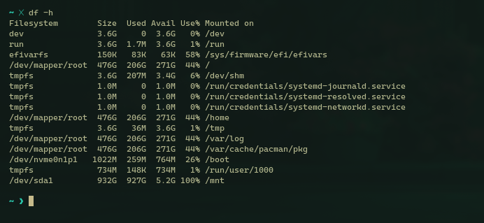

COMMANDS TRACKER
This file is to help me keep track of useful utility commands as I journey into Linux Land.
Think of it as a breadcrumb trail if you will.
Table of content
ntfsfix
sudo ntfsfix /dev/sda1
I have somehow managed to crash the file-system of my HDD and now it refuses to mount on /dev/sda1 , this nifty command comes to the rescue.
exact error text 👉🏽
Error mounting /dev/sda1/ at /run/media : wrong fs type, bad option, bad superblock on /dev/sda1, missing codepage or helper program, or other error.
mount
All files accessible in a Unix system are arranged in one big tree, the file hierarchy, rooted at /. These files can be spread out over several devices. The mount command serves to attach the file-system found on some external device, like a hard drive to the big file tree so its content can be accessible.
sudo mount /dev/sda1 /mnt -t auto
The above command will mount the device sda1 on your /mnt folde- ..I mean directory.
umount
sudo umount /dev/sda1
Will unmount the file-system at /dev/sda1/
rsync
rsync is a file transfer program capable of efficient local or remote trasnfer operations via a fast differencing algorithm.
rsync -av /mnt/Downloads /home/rtrvl/Downloads/
This would copy all files from /mnt/Downloads into /home/rtrvl/Downloads/
df
df -h
Will list all mounted file systems.
Sample Output 👇🏽

du
du is the disk usage command
du -sh /path/to/folder
-
-s: Summarizes the disk usage of the specified directory, rather than listing sizes of individual subdirectories and files within it. -
-h: Displays sizes in human-readable format.